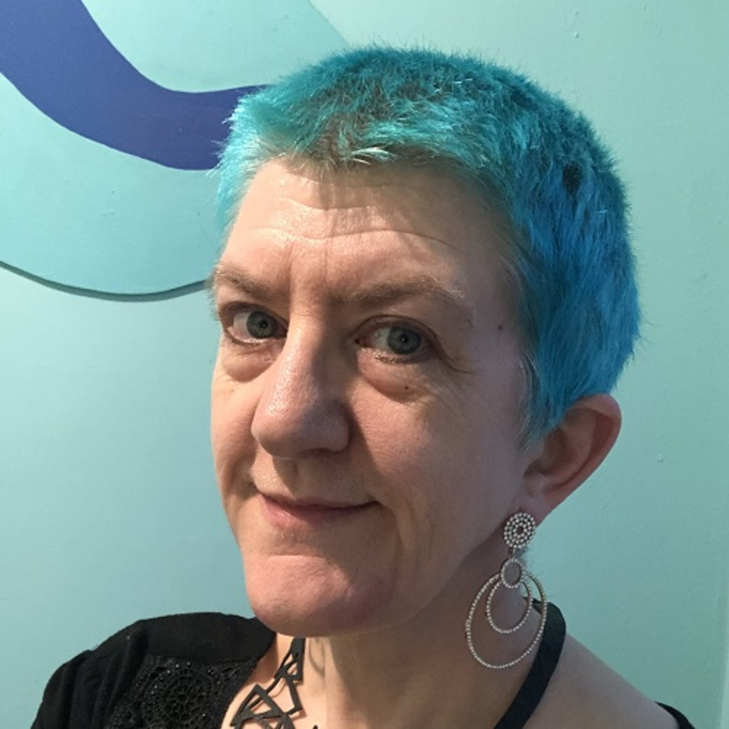

Hands-on technical leadership for a healthy engineering culture
2 days workshop with Clare Sudbery and Emily Bache
 Clare Sudbery Emily Bache
Emily Bache
Workshop details
Session Description
When teams work well together and have a good understanding of fundamental practices such as TDD (Test Driven Development) and Refactoring, this can have a considerable impact on the quality of the software they deliver. But how can busy technical leads and lead developers help their teams to reach this point, without having to spend hours preparing learning materials?
In this course we will explore and practise some powerful technical coaching techniques that can be used by those in technical leadership positions to enhance their developers’ ability to work well together.
Focusing on the power of the ensemble and the facilitation of “Learning Hour” sessions using the benefits of Sharon Bowman’s “4C” training structure, this 2-day course will give you the skills and tools you need to nurture the skills of all the developers on your team and in the wider organisation.
Outline
Day 1
- Technical coaching introduction including summary of the Samman method
- Hands-on ensemble working including Typist, Navigator and Supporter roles
- Introduction to Sharon Bowman’s 4C teaching model
- Hands-on sample ‘Learning Hour’ on Refactoring
- Facilitator guidelines for leading a similar learning hour with a team
Day 2
- Hands-on ensemble working - including "ensemble enabler" communication patterns
- Facilitator guidelines for leading similar ensemble working sessions with a team
- Formulating Learning Objectives when designing training
- Hands-on leading learning sessions in small groups
- Feedback and reflection on how to be a better teacher and coach
- Technical coaching for the long term - sources of inspiration and support, where to go from here.
Expectations on Participants
You will get the most out of this course if you:
- Are familiar with refactoring (you do not have to be an expert)
- Familiarity with the Java, C# or Python programming languages (you do not have to be an expert)
- Are interested in coaching and teaching
- Are either in a technical leadership position or have ambitions in that direction
- Have a team who need some help to either improve their software engineering skills (particularly in the areas of TDD and refactoring), or to learn those skills from scratch
About Clare SUDBERY
Clare is an independent technical coach with over 20 years of software engineering experience. She specialises in TDD, refactoring and other XP (“Extreme Programming”) practices.
In 2009, Clare abandoned IT to retrain as a high school maths teacher… but quickly returned to software, gaining new energy via XP. Clare teaches the Coding Black Females’ Return to Tech programme and co-ran Made Tech’s academy. She has a passion for helping under-represented groups to flourish in tech.
Clare hosted Season 1 of the acclaimed Making Tech Better podcast, and publishes notes and scribbles at medium.com/a-woman-in-technology, tinyurl.com/clare-wiki and insimpleterms.blog. She’s currently writing a report on trunk-based development and continuous integration for O’Reilly, and presents workshops and talks at multiple events worldwide.
Find on LinkedIn
About Emily BACHE
Emily Bache is an independent consultant and Technical Coach. She works with developers, training and coaching effective agile practices like Refactoring and Test-Driven Development.
Emily has written two books and teaches courses on platforms including Pluralsight and O'Reilly.
A frequent conference speaker, Emily has been invited to keynote at prestigious developer events including EuroPython, Craft and ACCU.
Recently Emily founded the Samman Technical Coaching Society, a not-for-profit organisation which aims to support and inspire technical coaches around the world.